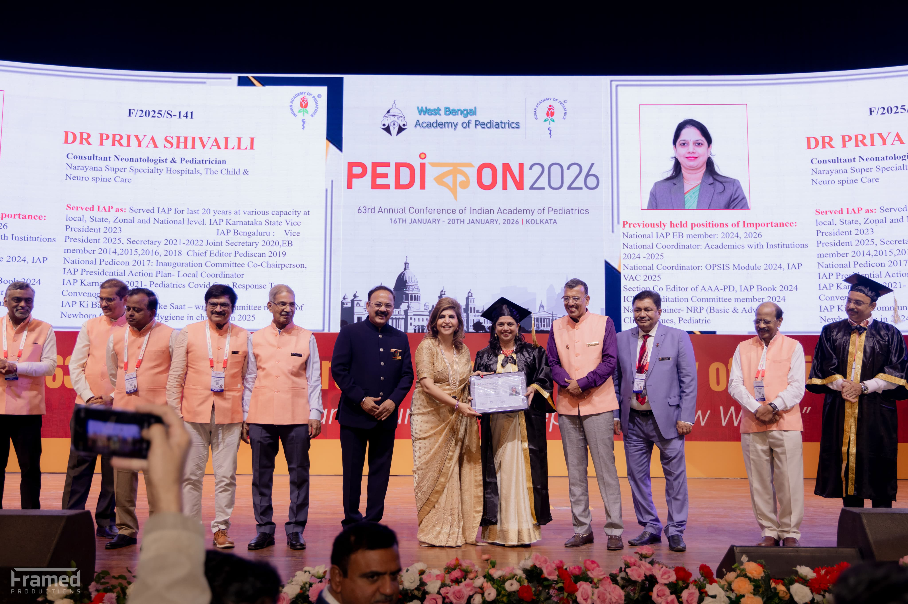

Experience
More than two decades of work across neonatal care, pediatrics, parent counseling, and follow-up planning.
THE CHILD & NEURO-SPINE CARE is led by Dr. Priya Shivalli, bringing together years of pediatric experience, family-focused communication, and a strong emphasis on growth, development, and long-term outcomes.
Dr. Priya Shivalli is known for balancing medical depth with a calm, empathetic style of communication. Her consultations are designed to give families clarity on what matters now, what can be safely observed, and how to plan for healthy long-term development.
More than two decades of work across neonatal care, pediatrics, parent counseling, and follow-up planning.
Newborn care, vaccination, milestone review, pediatric neurology pathways, and neuro-spine related support.
Recognised for contribution to academics, child health advocacy, and clinical excellence, including FIAP honour.
Training and practice focused on safe newborn transition, child wellness, and evidence-based medical care at every stage of growth.
Professional recognition for contributions to academics, high clinical standards, and advocacy around improving pediatric outcomes.
Consultation pathways shaped to support milestone concerns, pediatric neurology review, posture, mobility, and rehabilitation-linked planning.

From newborn review to neuro-spine guidance, the clinic is built to give families clarity and confidence.
Use the contact page to plan a clinic visit or open an appointment conversation today.